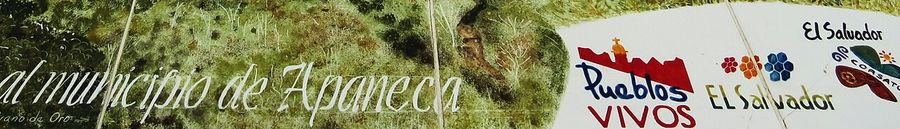
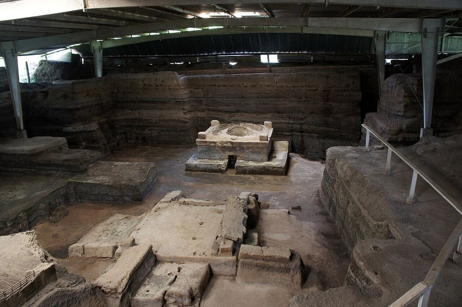
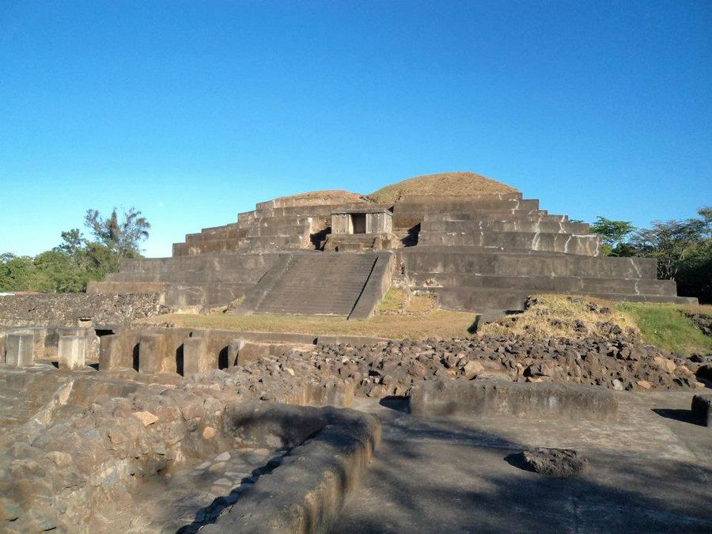

Acajutla
El Salvador · 13.5900°N 89.8340°W

Beatriz Fortinez · CC BY-SA 3.0
{kind=link}
Make this Notebook Trusted to load map: File -> Trust Notebook
Điểm tham quan

Ruta de las Flores (Juayúa, Ataco, Apaneca) — làng cà phê, chợ ẩm thực cuối tuần- hồ miệng núi lửa Coatepeque not found

Joya de Cerén (UNESCO — "Pompeii của châu Mỹ")
Tazumal (di chỉ Maya)- bãi El Tunco (lướt sóng) not found
- San Salvador ≈1,5 h nearest match was 6,160 km away; not used
Dệt may & smart textile
- - **Cảng Acajutla là tuyến Thái Bình Dương chính của El Salvador**, nối thẳng châu Á và bờ Tây Mỹ — hạ tầng phục vụ ngành may xuất khẩu. - El Salvador nổi tiếng về **chuỗi cung ứng dệt may tích hợp dọc** (từ nguyên liệu tới thành phẩm) cho phép lead time ngắn — khác với mô hình maquila thuần lắp ráp. - Cụm: zonas francas San Bartolo, El Pedregal, American Park; các nhà máy dệt kim/vớ quy mô lớn phục vụ thương hiệu Mỹ. - Di sản: **añil (chàm)** — El Salvador từng là nguồn thuốc nhuộm chàm hàng đầu thế giới; nay có các xưởng nhuộm chàm thủ công ở Suchitoto (tour được) not found